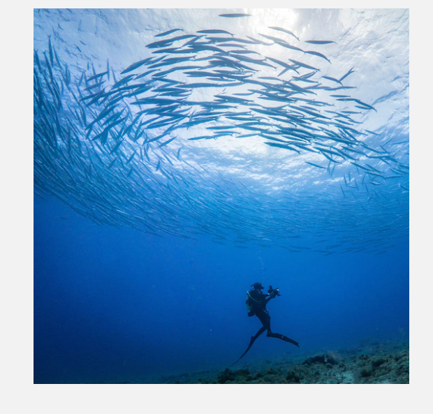

Researchp Activities
Researchp Activities

Iburi of Tosashimizu City,
Kochi Prefecture is home to many of the marine animals exhibited at the KAIYUKAN.
In the coastal area bordering the Pacific Ocean,
In a joint study with Kyoto University and Kochi University, and with the cooperation of local fishermen and other Iburi community members, OBIC has also worked on underwater biological research of marine animals and an investigation of fish species inhabiting nearby waters. The joint study results were published as a book titled “Fishes of the Kuroshio Current, Japan” on April 20, 2001.
On December 12, 2009, OBIC established a second tank with a total volume of 3,300 tons of water
Osaka Aquarium Biological Research Institute of Iburi Center (OBIC)
Iburi of Tosashimizu City,
Kochi Prefecture is home to many of the marine animals exhibited at the KAIYUKAN.
In the coastal area bordering the Pacific Ocean,
In a joint study with Kyoto University and Kochi University, and with the cooperation of local fishermen and other Iburi community members, OBIC has also worked on underwater biological research of marine animals and an investigation of fish species inhabiting nearby waters. The joint study results were published as a book titled “Fishes of the Kuroshio Current, Japan” on April 20, 2001.
On December 12, 2009, OBIC established a second tank with a total volume of 3,300 tons of water
 Around Facility
Around Facility


Cruise Ship Santa Maria
refreshing sea breezes,cruise

LEGOLAD
discovery center Osaka